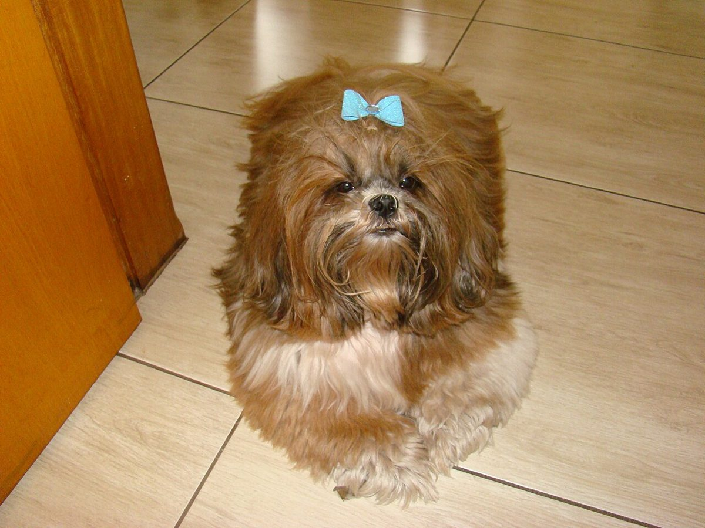
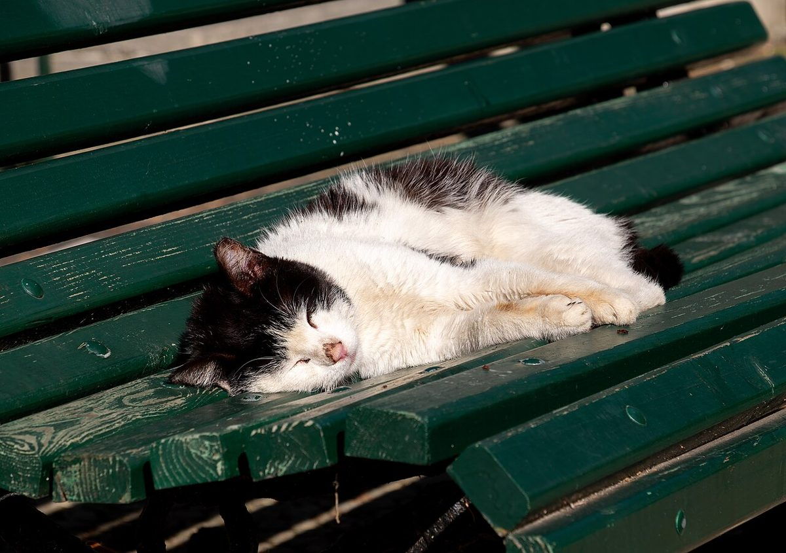
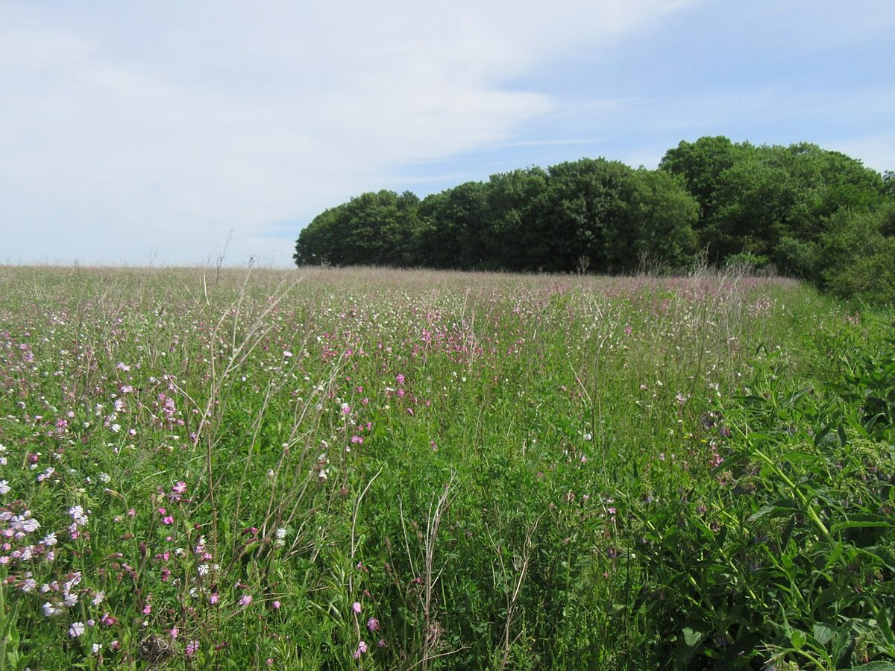

口コミ
以下は実際の声ではなく、掲載イメージとしてご用意した例です。
イメージ例
「初めてでも電話で相談しやすく、安心してお願いできました。」
イメージ例
「仕上がりがふんわりして、家に帰ってからも機嫌がよかったです。」
イメージ例
「希望をていねいに聞いてもらえて、次回もお願いしたいと思いました。」
本物のお客様の声は、ヒアリング後に差し替えます。



宮城県多賀城市中央
トリミングサロン
以下は実際の声ではなく、掲載イメージとしてご用意した例です。
「初めてでも電話で相談しやすく、安心してお願いできました。」
「仕上がりがふんわりして、家に帰ってからも機嫌がよかったです。」
「希望をていねいに聞いてもらえて、次回もお願いしたいと思いました。」
本物のお客様の声は、ヒアリング後に差し替えます。



掲載写真はフリー素材のイメージです。実際の店舗・施術・ペットではありません。他地域で撮影されたもの、撮影地が不明なものを含みます。